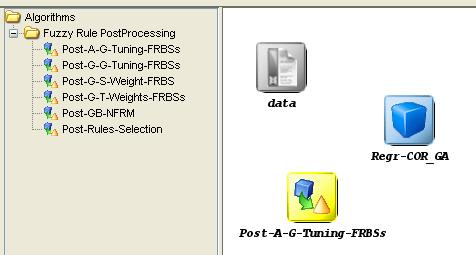

Postprocessing methods
This category includes the postprocessing methods included in the KEEL Suite:
To add any postprocessing method to the current experiment, it is only needed to select it and click in the graph of the experiment:
